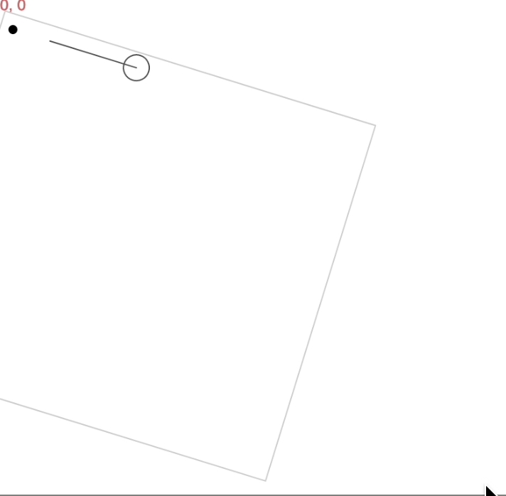
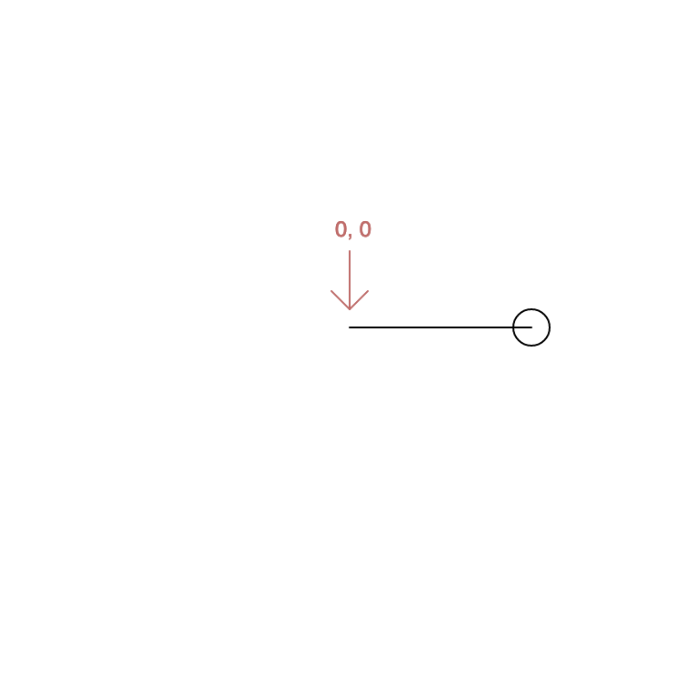
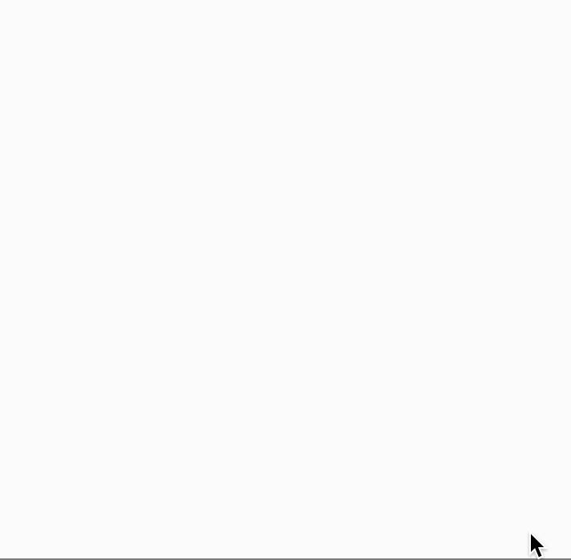
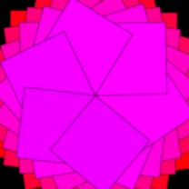
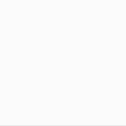

TBD:
Lesson 7
Spins
In this lesson, you'll learn how to draw lines and how to make beautiful spinning shapes.
TBD . circular repetitions
1. Lines
Tinker
Click ▶Play. You'll see
a line from the top left to the bottom right corner of the canvas.
There are 4 numbers in the line(0, 0, 250, 200) command.
It's helpful to think of them as two pairs. The first pair 0, 0 are the
x- and y-coordinates of the one end of the line.
So one end of this line is at the top left corner of the canvas.
The other pair 250, 200 are the
x- and y-coordinates of the other end of the line.
So the far end of this line is at the bottom right corner.
Try these challenges:
Change just the first argument in the line command
and then click ▶Play. Change it again a few times
until you get a sense of what it does.
Change each of the other arguments one at a time, clicking
▶Play after each change. Your goal is to develop
such a good sense of each argument that you can predict what will
happen before you click ▶Play!
2. More Lines
Tinker
Click ▶Play. You'll see
that a line has been added to the screen.
Try these challenges:
Change one number in the line
command to make the line longer. Be sure to click ▶Play
to see the change.
Change two numbers in the line
command so that the line is lower on screen but still
points straight across. Be sure to click ▶Play.
Change the line
command so that the line goes straight up and down.
Be sure to click ▶Play.
3. Rotate
Tinker
Click ▶Play.
You'll see a line with an empty ellipse at its end.
Try this challenge:
Find the new rotate
command. Change the number 0 to 1
and then click ▶Play.
What happens?
Change the number again, this time to a small decimal
like 0.3 and then click ▶Play.
Try some other small numbers, too. Use
numbers that are less than 1.5 to ensure that the
line doesn't rotate so far that it moves off screen.
Explanation
The rotate
command rotates the canvas and everything on it around
the point 0, 0, which is the top, left corner
of the screen. You can see this rotation in the picture below.
Positive numbers rotate clockwise, and negative numbers rotate counterclockwise.

4. Rotate Endlessly
Tinker
Click ▶Play.
You'll see the line and with a small ellipse rotating endlessly.
Try this challenge:
Change the rotation so that the lines are a little further apart.
Make the lines rotate in the opposite direction.
5. Translate
Tinker
Click ▶Play.
You can use a command called translate to move the
point (0, 0) to a different location on screen.
In this example, we've used the command translate(125, 100) to
move 0, 0 to the right 125 pixels and down 100 pixels.
That puts 0, 0 in the center of our canvas, which is
250 pixels wide and 200 pixels tall. Let's investigate how translate works.
Try these challenges:
In the translate command, change the first argument to
any number between 0 and 200, for now.
Click ▶Play.
What happens?
Change the second argument within the translate command.
Then click ▶Play.
What happens?
Explanation
The command translate(125, 100)
moves the point 0, 0 to a new location that is 125 pixels to the right and 100 pixels down
from its previous location.
The new location of 0, 0 is the center of the canvas.

6. Translate Then Rotate
Tinker
Click ▶Play.
You'll see the line and ellipse rotating around the center of the screen endlessly.
There's also a new variable r.
Let's investigate how this animation works!
Try these challenges:
Find the command that you think
changes the rotation. Hint! There's a number in this command.
Change the number and then press ▶Play.
If you found the correct command, your animation should change.
Change that same number again a few times,
clicking ▶Play
after each change to see the effects. What numbers create interesting images?
Change that number again to make the
line and ellipse rotate in the opposite direction.
7. Stop the Animation
Tinker
Click ▶Play.
The line and ellipse stop rotating after awhile.
Notice the new command if at the end
of the script. Let's investigate it.
Try these challenges:
In the if command,
the symbol > means "greater than."
Change 5 to some other numbers, both larger and smaller.
Click ▶Play after each
change to see the effect. Why do smaller numbers mean fewer spokes?
In the if command,
delete the parentheses (
and ). Then click ▶Play.
What happens?
TBD PI MAKES A HALF CIRCLE, AND TWO PI MAKES EXACTLY ONE COMPLETE CIRCLE.
TBD move to 6b lesson: spirals
6. Change Position
Tinker
Click ▶Play.
You'll see an ellipse making spiral arms, like galaxies in space.
Let's investigate how that's done.
Try these challenges:
Notice that in the script,
the ellipse's x- coordinate increases by 1 over and over.
On screen, that means the
ellipse move further and further from the center over time.
Change the script so
x increases by 0.1 instead of 1.
Be sure to click ▶Play.
Then change x by 2.
Try some other numbers, too. Which values added to x make spirals that you like?
The variable r is also
increasing by 1 over and over. Try changing r by 0.1,
0.5, -0.25, or other small decimals.
Which values added to r make spirals that you like?
Just for fun, let's change the
color and shape of the ellipses. Change the height and width
in the ellipse command to draw ellipses very long
and narrow ellipses or big circular ones.
Then add commands to fill your the ellipses with your favorite or random colors.
Explanation
Here's a slow-motion image of the ellipse's motion,
showing how each additional ellipse moves further and further from the center as the canvas rotates.
The ellipse's movement is created by changing the variable x,
and the rotation is created by changing r.
7. Change Size
Tinker
Click ▶Play. The animation is
created by a single ellipse. Let's investigate how it's done.
Try these challenges:
As the canvas spins, each new ellipse becomes a little wider.
What part of the code changes the width of the ellipse?
Can you change the code so that the ellipses
get wider a little more slowly?
a little more quickly?
Which rates of change create animations that you like?
Can you change the code so that the rotation
changes a little more slowly?
a little more quickly?
Which rates of change create animations that you like?
8. Make Your Own Project
Tinker
To make and save your own project, you'll work in the p5.js Web Editor. There are 4 examples below with pictures to show the animations they create. Choose one of the examples and copy its code. You'll use it as a starter project. Click this link to open the p5.js Web Editor in another tab. A new project opens. Select all the code and press Delete or Backspace to delete it. Paste the code you copied in the p5.js web editor. Change the code to make an animation of your own. Your animation can be similar to the GIFs or completely different. The more changes you make, the more you'll learn! Have fun! 👏
Example #1

let r = 0;
let x = 0;
let sz = 0;
function setup() {
createCanvas(250, 200);
colorMode(HSB);
}
function draw() {
translate(125, 100);
rotate(r);
r = r + 0.1;
if (r > 70) noLoop();
noFill();
stroke(0, 100, 0, 0.2);
ellipse(x, 0, sz, 10);
x = x + 0.1;
sz = sz + 0.1;
}
Example #2

let r = 360;
let x = 360;
function setup() {
createCanvas(400, 400);
colorMode(HSB);
background(0, 100, 0);
}
function draw() {
translate(200, 200);
rotate(r);
r = r - 1;
if (r < 0) noLoop();
fill(x, 100, 100);
rect(0, 0, x/2, x/2);
x = x - 1;
}
Example #3

let r = 0;
let a = 0;
function setup() {
createCanvas(400, 400);
colorMode(HSB);
background(0, 100, 0);
}
function draw() {
translate(200, 200);
rotate(r);
r = r + 1;
if (r > 400) noLoop();
fill(a, 100, 100, 0.1);
ellipse(0, 0, 400, 16);
a = a + 1;
}
Example #4

let r = 0;
let x = 0;
function setup() {
createCanvas(400, 400);
colorMode(HSB);
background(0, 100, 0);
}
function draw() {
translate(200, 200);
rotate(r);
r = r + 1;
if (r > 150) noLoop();
stroke(51, 100, 0);
strokeWeight(1);
fill(360, 100, 100);
ellipse(x, 0, 40, 8);
fill(51, 100, 100);
ellipse(x, 0, 8, 8);
x = x + 1;
}